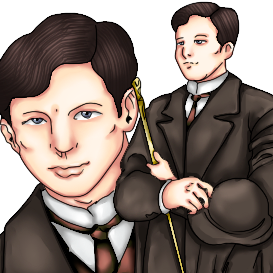
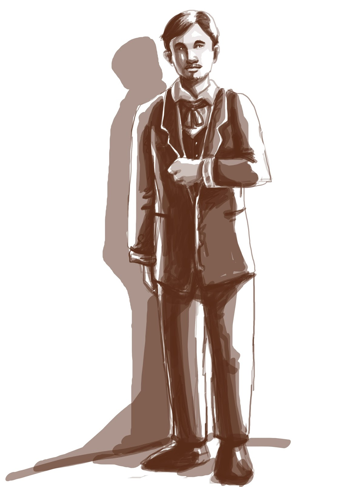

| Image |
Name |
Description |
|  |
Crisostomo Ibarra |
Full name is Juan Crisostomo Ibarra y Magsalin. Studied in Europe. Tall, handsome, good posture and good manners. He is cultured and well respected, but some friars are suspicous of him. |
.png) |
Padre Damaso |
He is a priest. Although he is a priest he is corrupt and a bad character. He is arrogant and belittles the Filipinos even though after a long time of listening to the Filipino peoples confessions, still doesn't know how to speak Filipino. |
|  |
Don Rafael Ibarra |
Father of Crisostomo Ibarra. He is a tax collecter. Imprisoned due to injustice and believed to be a revolutionist which made him an enemy of both the church and the government. He also died inside the prison. |
 |
Kapitan Tiago |
He is wealthy and well respected in the story. Close friends with Padre Damaso and Padre Sibilya. Owns a big majority of land in Manila and San Diego making him one of the richest property owners in the Philippines. He is also the father of Maria Clara. |
 |
Tinyente Guevarra |
Lieutenant of the Guardia Civil. He respects both Ibarra and his father. The one who informed Ibarra about what happened to his father. |